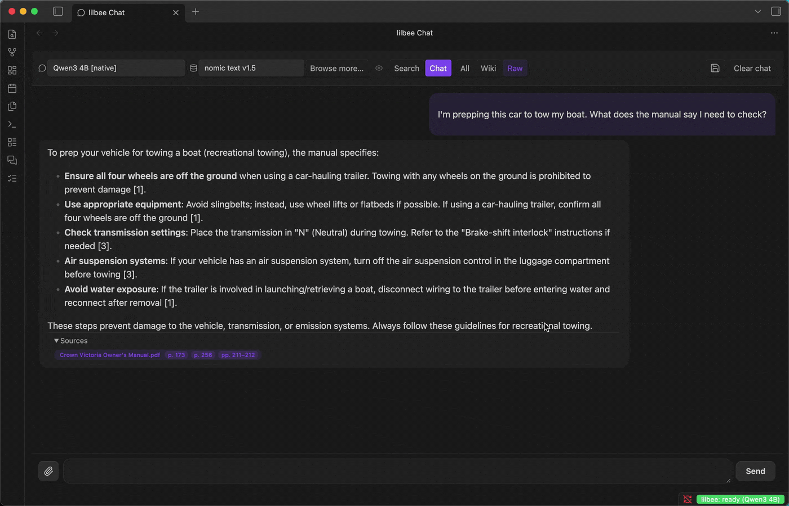
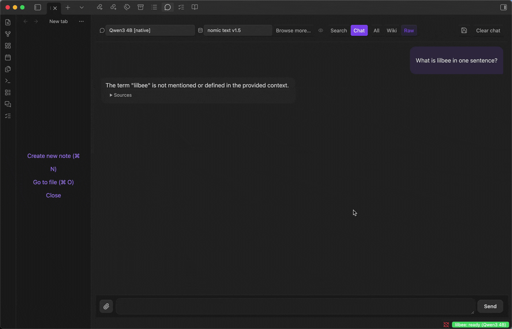
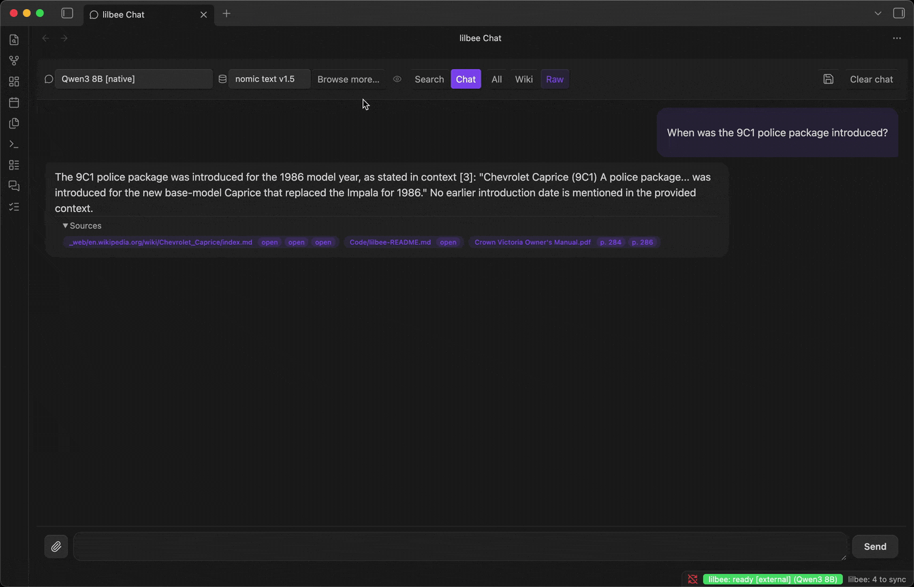
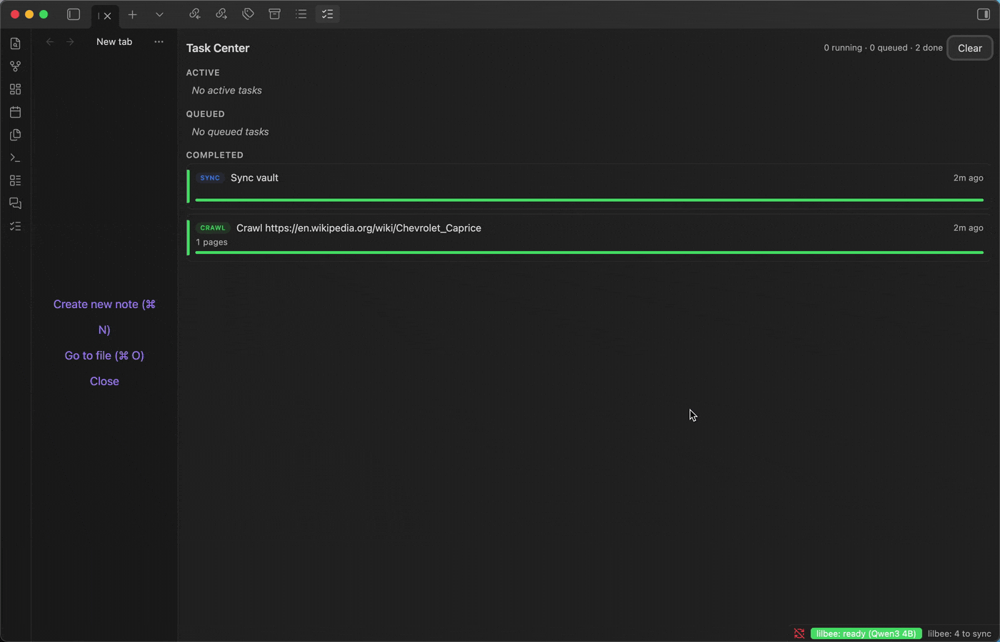
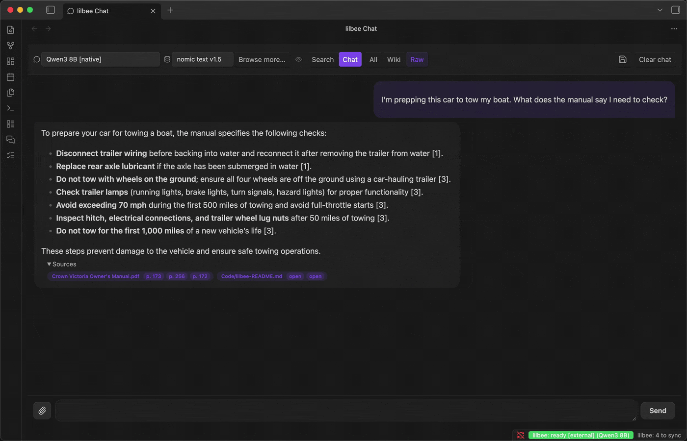
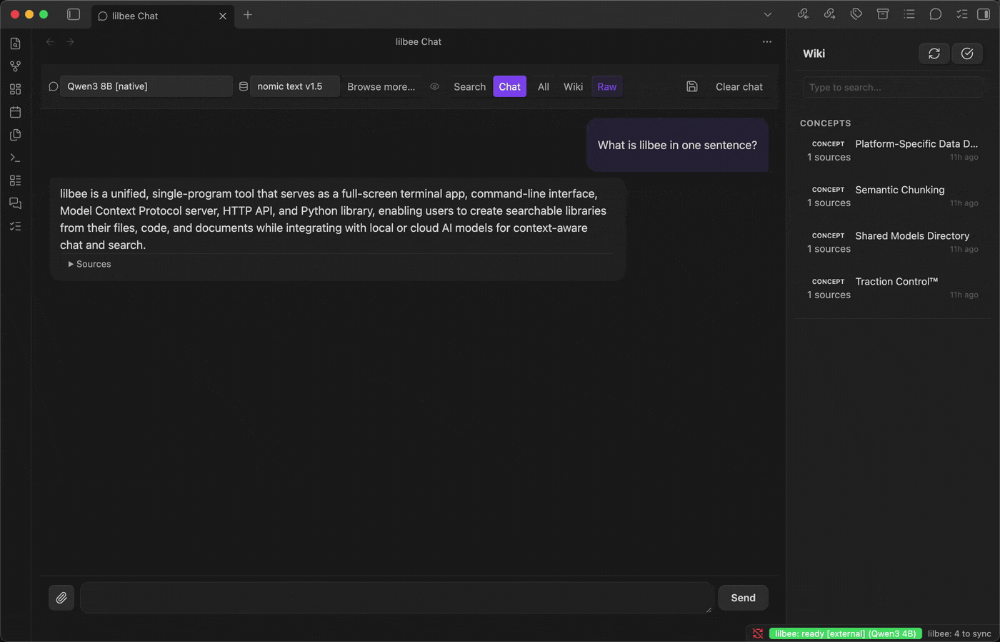

first run ok

SetupWizard walk-through: welcome → Managed mode → model picker → Escape. Demonstrates first-impression UX without committing to a download.
tour ok

~60s sweep across every plugin surface: chat sidebar via ribbon → quick cited Q&A → Task Center → catalog → documents → wiki → settings. No terminal bleed now.
chat ok

Towing question against the cv-manual: streams a 6-item answer with citations to pp. 173 / 256 / 211-212, then clicks each chip in sequence to open the SourcePreviewModal at the cited page. The bug fix that landed in #86 is what makes the deep-link work.
add a file ok

Stages a "Crown Vic upgrade log" note (alternator, hitch, brake-pad spec), runs lilbee:add-file, the chat then answers "can I tow my 4,200 lb boat?" citing both the new note (CURT hitch 5,000 lb rating) and the cv-manual (GCW limit).
crawl ok (rendered against the fixed server)

Empty corpus → CrawlModal → https://en.wikipedia.org/wiki/Chevrolet_Caprice → the file explorer surfaces the new lilbee/_web/en.wikipedia.org/…/index.md alongside the Task Center filling in. “When was the 9C1 police package introduced?” → cited 1986 answer from the wiki page. Click the source chip → SourcePreviewModal opens the full Wikipedia markdown (images and all) and scrolls through it. Verified against the Chromium-revision fix in lilbee main (PR #268).
model catalog ok

Walks every tab (Chat / Embed / Vision / Rerank / Library), scrolls each to surface infinite-scroll, then triggers a real Gemma 2 2B pull. The Task Center on the right shows live progress (1% → downloads in flight, KB/s and ETA).
settings ok
Opens lilbee settings, scrolls smoothly through every section: Server mode → Models (CHAT MODEL, with the fixed Installed-pill + trash layout from #86) → Search & Retrieval → Generation → Worker pool → Ingest → Wiki → API keys → Advanced.
wiki ok

Wiki sidebar shows concept + entity pages auto-generated from the cv-manual (Traction Control, Airbag, Brake, Supplemental Restraint System, Tire Pressure, ...). Lint modal pops at the end with "8 issues across 1 pages" — the wiki layer's quality-gate UX.